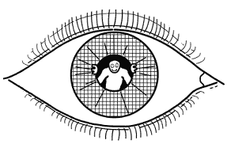
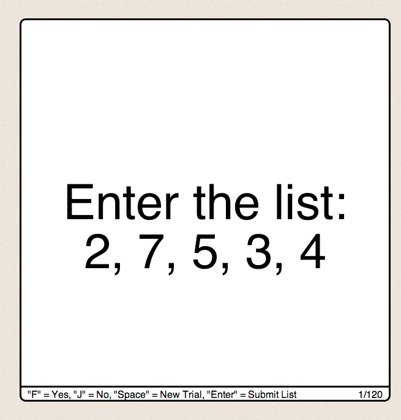

Welcome to the Swarthmore College Cognitive Psychology Experiment page!
Cognitive Psychology, the study of human cognition by means of the quantitative analysis of behavior, is based on experimental methods. Experiencing the application of those methods is a powerful supplement to reading about them.
This page was developed with the goal of making a few high quality cognitive psychology experiments available online. Many of the experiments we have developed here could be used to collect data for a class lab, and several are modifiable (e.g., the visual search experiment) such that you could devise your own version of the experiment to test specific alternative hypotheses.
Although aimed at college level, the experiments here could easily be incorporated into a high-school curriculum or (because they can be modified) be used as part of a high school science project.
At present we have implemented the three experiments found on the left. We hope to add more as time goes forward. We have also made our javascript code available. Your comments and suggestions are welcome. Please send to Prof. Frank Durgin.
Many thanks to the development team including Doug Willen, Andrew Reuther, Jacob Adenbaum, David Nahmias and Xingda Zhai.
Please note that these experiments work best in the Chrome, Safari, or Opera browsers.
How does the brain find something in the visual world that it is seeking? Triesman and Gelade (XXX) did an elegant experiment designed to show that it was easy to search for distinct features, but much harder to search for the absence of a feature. For example, searching for a Q among O's is easy, but searching for an O among Q's is much harder. In this version of the experiment, you can choose to simply replicate this basic finding, or, if you wish, you can design your own version of the experiment by choosing any characters you wish as target and distracter(s). Does search become harder when you have more different types of distractors?
To practice the task and see how it works, click the "Try it" button below. By default you should press "F" when the target is present and "J" when the target is not present. Press the space bar to start each new trial. Try to go as quickly as you can without making more than a couple mistakes.
If you are holding a list in your memory, how can you check to see if an item is on the list?
Sternberg (1966) proposed that we could measure mental operations using an "additive factors" approach. He gave people lists of numerals of different lengths. Then a probe digit would follow. People had to indicate whether the item was in the list or not. Does it take time to search immediate memory?
To emulate Sternberg's auditory presentation technique, we will present number words one at a time. You will get a list to store of between 1 and 6 numbers. Then a warning signal will tell you that the probe will be presented. You should respond as quickly as you can to indicate whether the probe was in the list or not by pressing "F" if it was present and "J" if it was not. After each trial you have to type in the entire list in order to show that you stored it all. Press return when you have finished entering the list.
Do the task diligently and we'll discuss the data once you're finished.
Stroop (1935) showed that there was large processing cost for naming the ink color of incongruently named color words. For example if the word "blue" is printed in red, trying to say "red" in response is rendered more difficult by the fact that the word "blue" is staring you in the face. In contrast, saying "blue" to such a word is easy. Many textbooks illustrate this phenomenon because it illustrates ways in which our ability to control the flow of information is limited. Short of blurring our eyes, it is hard to avoid processing the verbal information even when we know it isn't relevant. Here we implement a variant designed to show that this phenomenon is not simply based on the precedence of verbal information.
In this reverse Stroop task you have to point to a color patch corresponding to the verbal part of a Stroop word. That is, if presented with the word "blue", depicted in red light, your task is to point to the blue color patch in the surround. Because this is a visual search task in which one is searching for a sensory color, you may find that the color in which the word is printed is now quite interfering.
The present implementation of this task is designed to mimic an experiment reported by Durgin (2003) in which only four different color words ever appeared (these words were selected at random from a set of 9 colors), and the distractor color (printed color) could either belong to this set of four or not (In the Set or Not in the Set), and could also be present or absent as one of the surrounding response patches available.
To do the task you simply click the mouse in the center to show the display and then move the mouse to the color named by the central word (as quickly as possible without sacrificing accuracy).